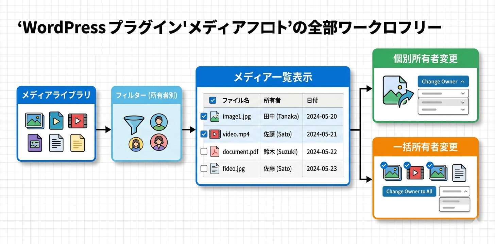

Kashiwazaki SEO Media Control マニュアル

Kashiwazaki SEO Media Control は、WordPressメディアライブラリの詳細管理と所有者変更機能を提供するプラグインです。メディアファイルの所有者情報を可視化し、個別・一括での所有者変更やユーザー別のフィルタリングが可能です。
メディアファイルの所有者情報は、マルチユーザー環境でのコンテンツ管理において重要です。本プラグインはメディアライブラリの全ファイルに所有者情報を表示し、個別・一括での所有者変更を可能にします。
主な機能
メディア管理
メディアライブラリの全ファイルを一覧表示し所有者情報を可視化
所有者変更
メディアファイルの所有者を個別・一括で変更可能
フィルター機能
所有者別にメディアを絞り込み検索
プラグインの特長
- メディアライブラリの全ファイルに所有者情報を表示
- メディアファイルの所有者を個別に変更可能
- 複数ファイルの所有者を一括で変更可能
- 所有者・ユーザー別のAJAXフィルタリング機能
- フロントエンド出力なし（JSON-LD、メタタグなし） -- 管理画面のみで動作
- 管理画面アセット: CSS 6.3KB、JavaScript 19KB の軽量設計

SEO・GEO（生成AI最適化）への効果
適切な著者帰属によるE-E-A-T強化
メディアファイルの所有者情報は、画像のメタデータにおける著者帰属に直結します。Googleが重視するE-E-A-T（Experience, Expertise, Authoritativeness, Trustworthiness）の観点から、画像の正確な著者情報は、コンテンツの専門性と信頼性を裏付ける重要な要素です。本プラグインにより、全メディアファイルの著者帰属を正確に管理できます。
チームメンバー変更時の一括対応
チームメンバーの異動や退職時に、該当ユーザーが所有するメディアファイルを一括で別のユーザーに移管できます。これにより、著者帰属の正確性を維持し、E-E-A-Tシグナルの一貫性を保つことができます。放置されたメディアの所有者情報は、検索エンジンに対して組織の管理体制の不備を示す可能性があります。
メディア管理によるサイト品質の向上
所有者別のフィルタリング機能により、各ユーザーが管理するメディアファイルを効率的に把握できます。未使用ファイルの特定や、特定ユーザーのアップロード状況の確認が容易になり、メディアライブラリの整理整頓を通じてサイト全体の品質向上に貢献します。
生成AI（GEO）への対応
AIはメディアのメタデータ（著者情報を含む）をコンテンツの権威性評価に利用する可能性があります。正確な所有者情報が設定されたメディアファイルは、AIによるコンテンツの信頼性評価にプラスの影響を与え、AI検索結果での引用やレコメンデーションの精度向上に寄与します。
目次（マニュアル構成）
| ページ | 内容 |
|---|---|
| 概要 | プラグインの機能概要、SEO/GEO効果、動作要件 |
| インストール・初期設定 | インストール手順、管理画面の確認、基本設定 |
| メディア管理 | 所有者表示、個別・一括所有者変更、フィルター機能 |
| トラブルシューティング | よくある問題と対処法、動作要件、技術仕様、アーキテクチャ |
動作要件
| 項目 | 要件 |
|---|---|
| WordPress | 5.0 以上 |
| PHP | 7.4 以上 |
| 対応ブラウザ | Chrome、Firefox、Safari、Edge（最新版） |
インストール後すぐに使い始めたい場合は、インストール・初期設定ページに進んでください。